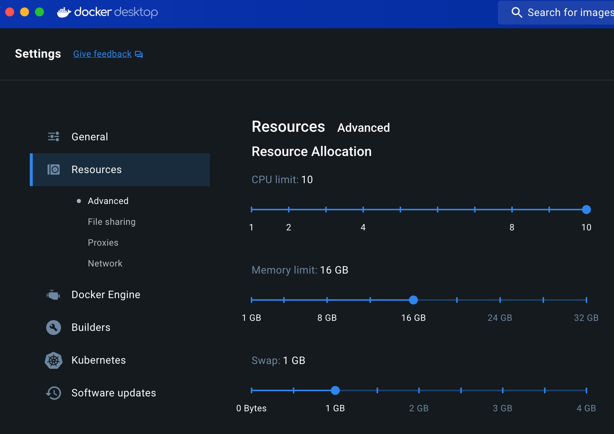
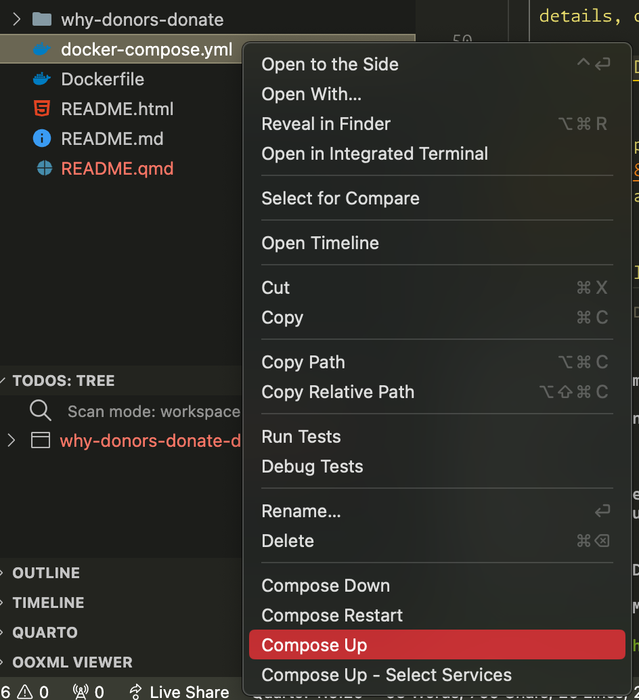
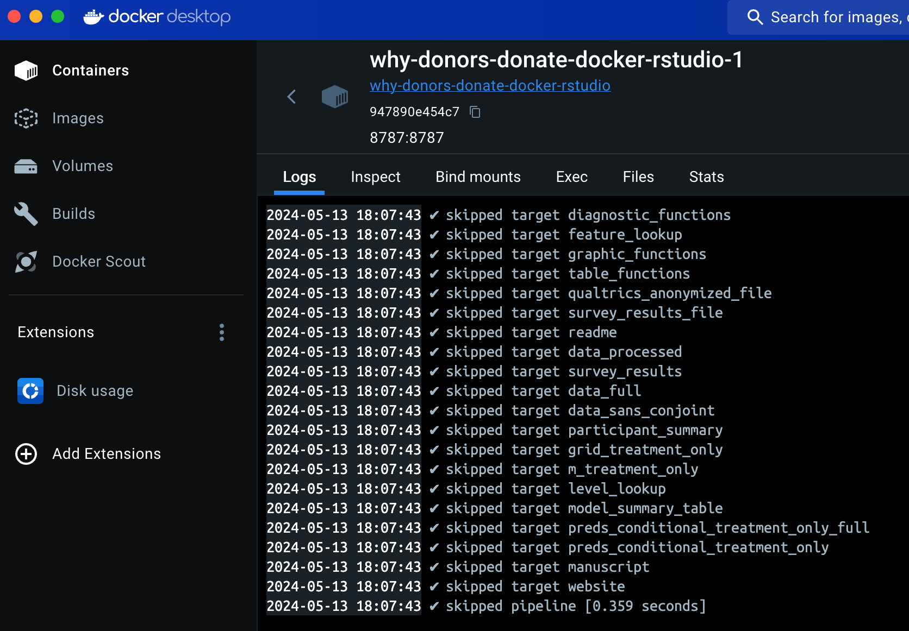

Why Donors Donate replication code
Overview
We use the {renv} package to create a stable version-specific library of R packages, and we use the {targets} package to manage all the file dependencies and run the analysis. {targets} is especially helpful with long-running objects like the main model, which takes 20–30 minutes to run—as long as upstream dependencies don’t change, the model only needs to run once, and can be loaded from {targets}’s data store thereafter.
Because it can sometimes be difficult to set up and configure version-specific libraries of R packages and install specific versions of Stan, we provide two methods for replicating our analysis: (1) a Docker container built and orchestrated with Docker Compose, or (2) restoring a {renv} environment on your local computer.
The data for the analysis is accessible in why-donors-donate/data/raw_data. The {targets} pipeline cleans this data and creates an object named data_full—load it into an R session with targets::tar_load(data_full).
The complete {targets} pipeline generates two output artifacts:
- Manuscript: An HTML version of the manuscript and appendix, located at
why-donors-donate/manuscript/output/manuscript.html(or athttp://localhost:8888/notebook/manuscript.htmlif you run the pipeline with Docker Compose). - Analysis notebook: A static website containing more complete details about the survey, experiment design, preregistration, statistical methods and other information, located at
why-donors-donate/_site(or athttp://localhost:8888if yo run the pipeline with Docker Compose).
Method 1: Docker Compose (recommended)
The entire analysis can be run in a Docker container based on R 4.3.3, with all packages locked at specific versions defined in why-donors-donate/renv.lock.
Here’s how to do this:
Install Docker Desktop on your computer (instructions for macOS or Windows).
Make sure Docker is running.
In the Docker Desktop settings, make sure you allocate at least 8 CPUs and 16 GB of RAM.

Docker Desktop resource settings Build the analysis with Docker Compose. There are two general approaches:
Using Visual Studio Code (recommended): If you download Visual Studio Code and its Docker extension, you can right click on the
docker-compose.ymlfile in the File Explorer sidebar and select “Compose Up”.
Docker Compose contextual menu in the Visual Studio Code sidebar Using the terminal: Using a terminal, navigate to this replication code directory and run this:
docker compose -f docker-compose.yml up
Wait. It takes 20–30 minutes to build the {renv} library (but only the first time you run this; subsequent runs of
docker composeshould be instant), and it takes about 30–40 minutes to run the analysis (but only the first time; subsequent runs oftargets::tar_make()should be instant).Monitoring the pipeline progressDepending on how you run
docker compose, you might not see the progress of the {targets} pipeline. If you run it from the terminal, you should; if you run it from Visual Studio Code, you won’t. You can see the logs of the pipeline from the Docker Desktop app in the container details, or by runningdocker logsfrom the terminal.
Docker Desktop logs When the pipeline is all the way done, visit
http://localhost:8888to see the analysis notebook and finished manuscript (athttp://localhost:8888/notebook/manuscript.html).You can also see these outputs on your computer: the analysis notebook is at
why-donors-donate/_siteand the manuscript is atwhy-donors-donate/manuscript/output/manuscript.html.Additionally, you can explore the data and analysis in an RStudio session in your browser if you visit
http://localhost:8787. Any edits you make here will also be reflected on your local computer.
Method 2: {renv} locally
It’s also possible to not use Docker and instead run everything locally.
Open
why-donors-donate/why-donors-donate.Rprojto open a new RStudio project.Run
renv::restore()to install all the packages.Run
cmdstanr::install_cmdstan()to install CmdStan.Download and install the Libre Franklin font.
Run
targets::tar_make()to run the full analysis pipeline. This will take 30–40 minutes the first time.When the pipeline is all the way done, find the analysis notebook at
why-donors-donate/_siteand the manuscript atwhy-donors-donate/manuscript/output/manuscript.html.